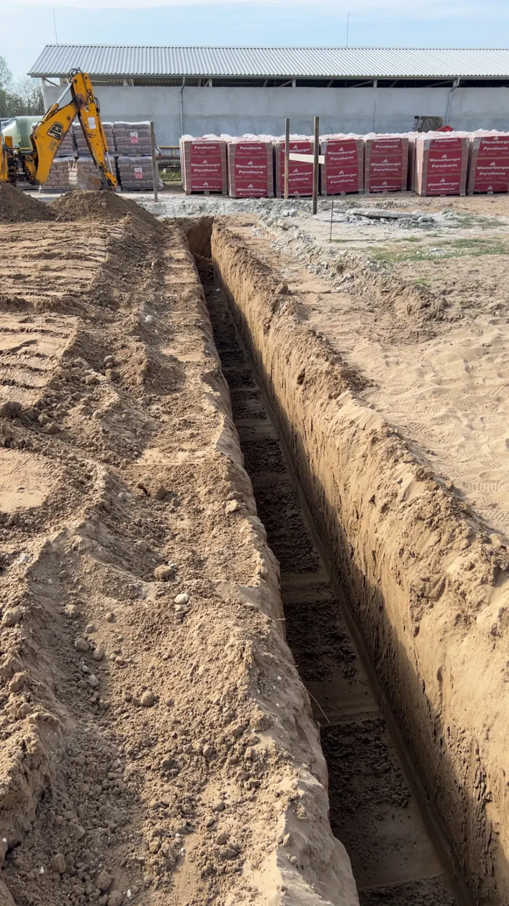
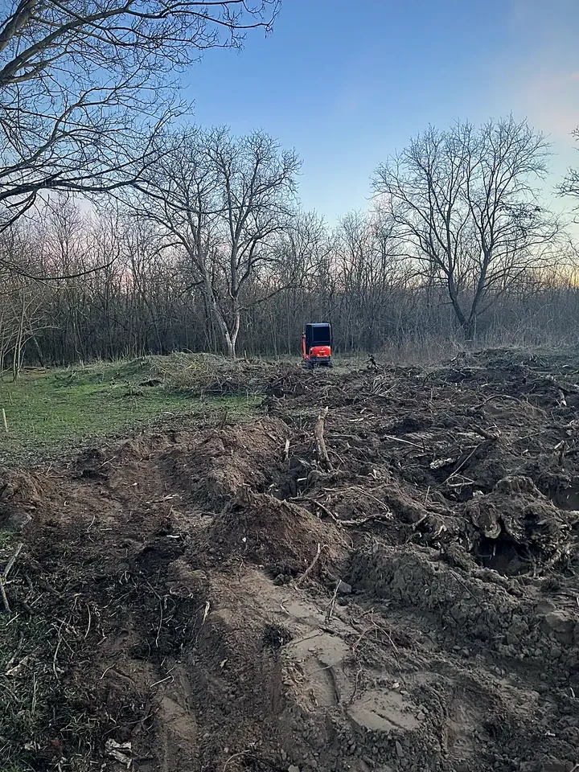

Gépi földmunka • Kecskemét és 60 km-es körzete
Nagy feladatok. Kis helyeken is.
Alapásás, közműárok, nyomvonalásás és tereprendezés – kisebb munkagéppel, szűkebb helyeken is.
+36 70 420 4170
- Alapásás
- Közműárok
- Nyomvonalásás
- Tuskóeltávolítás
- Tereprendezés
- Kert · udvar · telek
01 / Amiben segítek
Gépi földmunka Kecskeméten és környékén
„Építkezel? Kertet újítasz? Nem akarsz ásni napokig?”
Kisebb munkagéppel dolgozom, kertben, udvaron, telken. Mondd el telefonon, mit kell kiásni – a részleteket a helyszín alapján egyeztetjük.
Hívj, egyeztessünk02 / A különbség
Szűk hely?
Nem akadály.
„Kis géppel dolgozom, így szűk helyekre is bejutok.”
Nem minden munka egy nyitott építési telken van. Sokszor a kapun, a ház mellett, a kert végébe kell bejutni – ott, ahová egy nagy gép nem fér oda, és kézzel napokig tartana az ásás.
- Kertben, udvaron, telken
- Ház mellett, kerítés mentén
- Fás, beépült területen
A bejutás a helyszíntől függ – hívj, írd le, és megmondom, megoldható-e.

03 / Munkák
Valódi helyszínek, valódi föld
Saját munkafotók, retusálás nélkül. Kattints a képre a nagyobb nézetért.
04 / Rólam
Kalocsa Zoltán vagyok, gépi földmunkát vállalok.
Gyorsan és korrekt áron – így dolgozom. Közvetlenül velem beszélsz: nincs diszpécser, nincs ügyintéző, a telefont én veszem fel.
Hogyan dolgozom
-
01
Kapcsolatfelvétel
Hívj fel, és mondd el, hol és milyen földmunkára van szükség.
-
02
Igények egyeztetése
Átbeszéljük a helyszínt, a bejutást és a feladatot.
-
03
Helyszíni földmunka
A megbeszélt időpontban érkezem a géppel, és elvégzem a munkát.
05 / Kiszállás
Kecskemét + 60 km
Gépi földmunkát Kecskeméten és a környező településeken vállalok. Pontos helyszín alapján egyeztessünk.
Megkérdezem, kijön-e06 / Kapcsolat
Mozdítsuk meg a terved!
Hívj közvetlenül, és mondd el, milyen földmunkára van szükséged. A telefont én veszem fel.